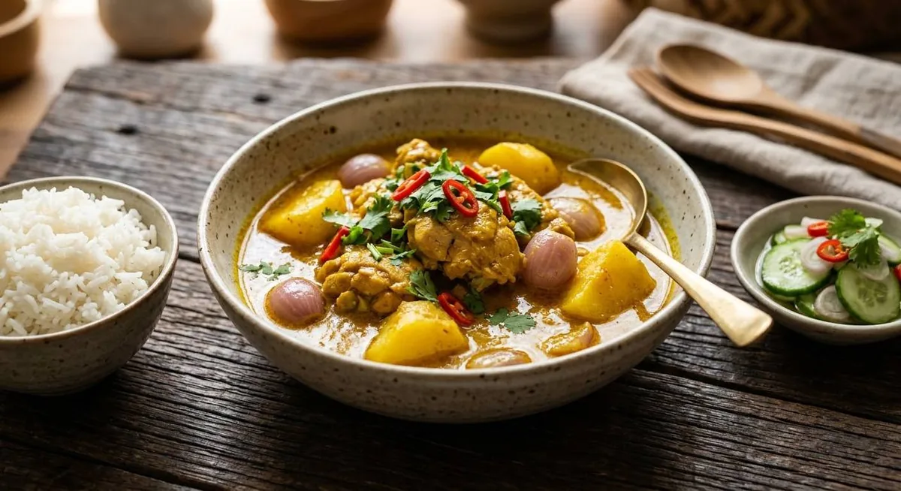

The borrowed word, made Thai. Here the flavour doesn't come from a pounded chilli paste — it comes from curry powder itself. Chicken, potato, bay leaf, coconut milk, and ajad on the side.

The name gives it away: แกงกะหรี่ is the Thai pronunciation of the borrowed word kari, and the dish travelled into the Thai kitchen through the country's Muslim communities — the same lineage that brought satay and massaman. But where แกงเผ็ด is built on pounded dried chillies, this one is built on curry powder. Turmeric, coriander, cumin, warm spice — the yellow paste gets its character from the powder, and Thai cooks say so out loud.
That's why it sits oddly on western Thai menus: it's the mildest of the Thai curries, the one served with ajad — the same cucumber pickle that cuts through satay — and the one with potato and bay leaf in it. It is closer, in spirit, to the kari of the Malay peninsula than to the chilli-led curries around it in the cookbook.
The Japanese curry that shares its name is its descendant, thickened with roux and poured over tonkatsu. The Thai original stays loose, coconut-milky and golden — a curry you can eat daily without a fight.
| Thai | English | Amount |
|---|---|---|
| น้ำมันรำข้าว | Rice bran oil | 2 tbsp |
| พริกแกงกะหรี่ | Yellow curry paste | 50 g |
| หัวกะทิ | Head coconut milk | 200 ml |
| สะโพกไก่ | Chicken thigh, boneless, bite-size | 400 g |
| ใบกระวาน | Bay leaves | 2 |
| น้ำปลา | Fish sauce | 2 tbsp |
| น้ำตาลปี๊บ | Palm sugar | 50 g |
| หางกะทิ | Thin coconut milk | 400 ml |
| มันฝรั่ง | Potato, chunked — sweet potato works; the sources split | 100 g |
| หอมแดง | Shallots, halved — or one onion | 5 |
| ผักชี · พริกชี้ฟ้าแดง | Coriander and red spur chilli, to serve | as liked |
| อาจาด | Ajad pickle, to serve | as liked |
| Paste from scratch (Kapook): dried jinda chillies · shallots · lemongrass · garlic · galangal · kaffir lime zest · coriander seed · pepper · cumin · curry powder · shrimp paste | ||
Potato or sweet potato. Phol's recipe uses potato; the Kapook home version uses sweet potato and swaps the shallots for onion. Both are published; the curry takes either.
The bay leaf. Phol adds two bay leaves and they're in the method above; plenty of home recipes omit them. The bay leaf is the subtle bridge to the dish's Indian ancestry.
Where the curry powder lives. The Kapook paste pounds curry powder straight into the paste; other cooks fry the paste and add powder later. Either way, the powder is the flavour — this is not optional.
Coconut milk or evaporated milk. The classic uses coconut milk; some home versions use evaporated milk for a lighter curry. The coconut version is the standard.
Ajad or not. Phol serves it with ajad and calls it part of the dish; home cooks sometimes skip it. The pickle's sharpness is what the mild, sweet curry needs.
The lineage. Thai food writers agree the dish came through the Muslim communities; whether it arrived with traders from India or via the Malay peninsula is the argument. The dish itself doesn't care.
This recipe is translated from the following Thai-language sources. Where they disagree, we've said so.
1. Phol Food Mafia — "Chicken Curry (แกงกะหรี่ไก่)" (full quantities, bay leaf, potato and the ajad service) — pholfoodmafia.com
2. Kapook — "แกงกะหรี่ไก่ สไตล์ไทยหอมเครื่องเทศ พ่วงสูตรพริกแกงกะหรี่" (the from-scratch paste with cumin and curry powder, sweet-potato version) — cooking.kapook.com
3. BlogGang (jazzy-bong) — "แกงกระหรี่ไก่แบบดั้งเดิม (มุสลิม)" (the traditional Muslim-community version, lineage context) — bloggang.com